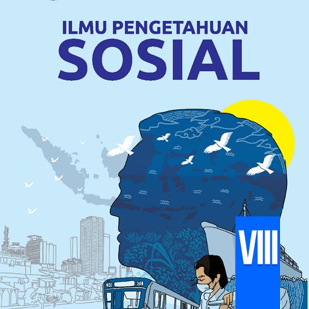

SISI SAMPING
Gambar:

Main Content
Sosiologi
Sosiologi adalah ilmu sosial yang mempelajari setiap kehidupan masyarakat. Objek kajian dari sosiologi tidak lain adalah kehidupan manusia. Kata sosiologi berasal dari bahasa Yunani, yang terdiri dari kata 'socius' yang artinya masyarakat, dan 'logos' yang artinya ilmu. Istilah dari sosiologi pertama kali dikemukakan oleh seorang filsafat dari Prancis, bernama Auguste Comte pada tahun 1839. Oleh karena itu, Auguste Comte dikenal sebagai Bapak Sosiologi Dunia. Dalam Kamus Besar Bahasa Indonesia (KBBI), sosiologi adalah pengetahuan atau ilmu tentang sifat, perilaku, dan perkembangan masyarakat, atau ilmu tentang struktur sosial, proses sosial, dan perubahannya.
SISI SAMPING
Gambar:
